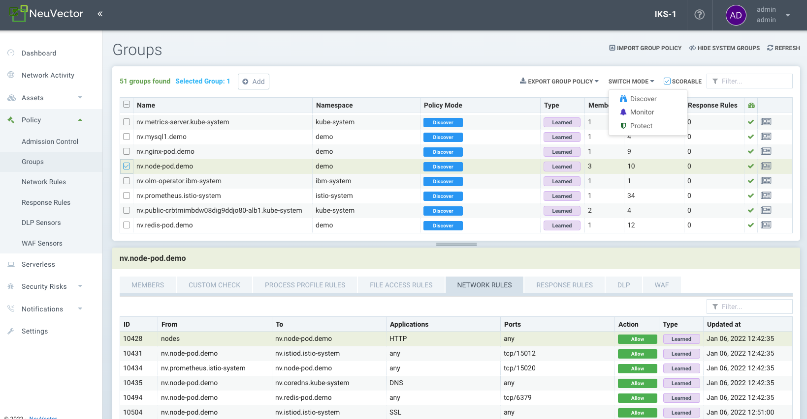
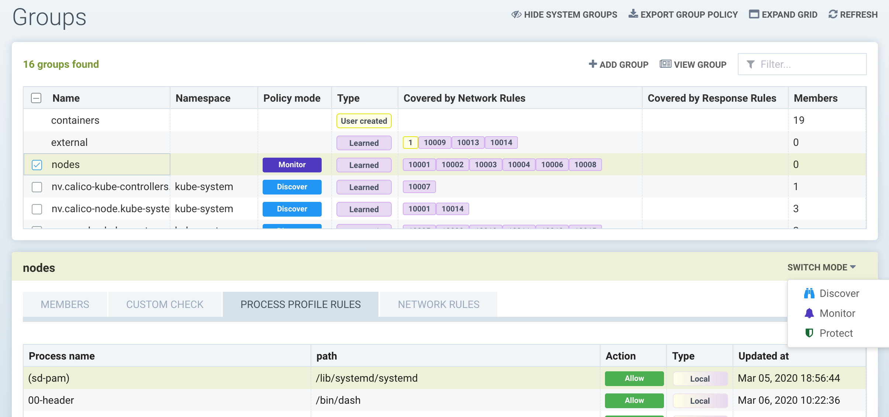

Groups
Policy: Groups
This menu is the key area to view and manage security rules and customize Groups for use in rules. It is also used to switch modes of Groups between Discover, Monitor, and Protect. Container Groups can have Process/File rules in a different mode than Network rules, as described here. Please see the following individual sections for explanations of Custom Compliance Checks, Network Rules, Process and File Access Rules and DLP/WAF detection. Note: Network rules can be viewed in the Groups menu for any group, but must be edited separately in the Network Rules menu.
SUSE® Security automatically creates Groups from your running applications. These groups start with the prefix 'nv.' You can also manually add them using a CRD or the REST API and can be created in any mode, Discover, Monitor, or Protect. Network and Response Rules require these Group definitions. For automatically created Groups ('learned' groups starting with 'nv'), SUSE® Security will learn the network and process rules and add them while in Discover mode. Custom Groups will not auto-learn and populate rules. Note: 'nv.' groups start with zero drift enabled by default for process/file protections.

It is convenient to see groups of containers and apply rules to each group. SUSE® Security creates a list of groups based on the container images. For example, all containers started from one Wordpress image will be in the same group. Rules are automatically created and applied to the group of containers.
The Groups screen also displays a 'Scorable' icon in the upper right, and a learned group can be selected and the Scorable checkbox enabled or disabled. This controls which containers are used to calculate the Security Risk Score in the Dashboard. See Improve Security Risk Score for more details.
The Groups screen is also where the CRD yaml file for 'security policy as code' can be imported and exported. Select one or more groups and click on the Export Group policy button to download the yaml file. See the CRD section for more details on how to use CRDs. Important: Each selected group AND any linked groups through network rules will be exported (i.e. the group and any other group it connects to through the whitelist network rules).
Auto Deletion of Unused Groups
Learned groups (not reserved or custom groups) can be automatically deleted by SUSE® Security if there are no members (containers) in the group. The time period for this is configurable in Settings → Configuration.
Host Protection - the 'Nodes' Group
SUSE® Security automatically creates a group called 'nodes' which represents each node (host) in the cluster. SUSE® Security provides automated basic monitoring of hosts for suspicious processes (such as port scans, reverse shells etc.) and privilege escalations. In addition, SUSE® Security will learn the process behavior of each node while it is in Discover mode to whitelist those processes, similar to how it is done with container processes. The 'local' (learned) process rule list is a combination of all processes from all nodes in the cluster while in Discover mode.
The nodes can then be put into the Monitor or Protect mode, where SUSE® Security will alert is any process starts while in Monitor mode, and block that process in Protect mode.

To enable host protection with process profile rules, select the 'nodes' group and review the learned processes on the node. Customize if needed by adding, deleting or editing process rules. Then switch the mode to Monitor or Protect.
|
Network connection violations of rules shown in the Network Rules for Nodes are never blocked, even in Protect mode. Only process violations are blocked in Protect mode on nodes. |
Custom Groups
Groups can be manually added by entering the criteria for the group. Note: Custom created groups don’t have a Protection mode. This is because they may contain containers from different underlying groups, each of which may be in a different mode, causing confusion about the behavior.
Groups can be created by:
-
Images
Select containers by their image names. Examples: image=wordpress, image@redis
-
Nodes
Select containers by nodes on which they are running. Examples: node=ip-12-34-56-78.us-west-2
-
Individual containers
Select containers by their instance names. Examples: container=nodejs_1, container@nodejs
-
Services
Select containers by their services. If a container is deployed by Docker Compose, its service tag value will be "project_name:service_name"; if a container is deployed by Docker swarm mode service, its service tag value will be the swarm service name.
-
Labels
Select containers by their labels. Examples: com.docker.compose.project=wordpress, location@us-west
-
Addresses
Create a group by DNS name or IP address ranges. Examples: address=www.google.com, address=10.1.0.1, address=10.1.0.0/24, address=10.1.0.1-10.1.0.25. DNS name can be any name resolvable. Address criteria do not accept the != operator. See below for special virtual host 'vh' address groups.
A group can be created with mixed criteria types, except the 'address' type, which cannot be used together with other criteria. Mixed criteria enforces an ‘AND’ operation between the criteria, for example label service_type=data AND image=mysql. Multiple entries for one or criteria are treated as OR, for example address=google.com OR address=yahoo.com. Note: To assist in analyzing ingress/egress connections, a list of ingress and egress IPs can be downloaded from the Dashboard → Ingress/Egress details section as an Exposure Report.
Partial matching is supported for image, node, container, service and label criteria. For example, image@redis, selects containers whose image name contains 'redis' substring; image^redis, selects containers whose image name starts with 'redis'.
It is not recommended to use address criteria to match internal IPs or subnets, especially those protected by enforcers, instead, using their meta data, such as image, service or labels, is recommended. The typical use cases for address group are to define policies between managed containers and external IP subnets, for example, services running on Internet or another data center. Address group does not have group members.
Wildcards '' can be used in criteria, for example 'address=.google.com'. For more flexible matching, use the tilde '~' to indicate a regex match is desired. For example to match labels 'policy~public.*-ext1' for the label policy.
|
Special characters used after an equals '=' in criteria may not match properly. For example the dot '.' In 'policy=public.' will not match properly, and regex match should be used instead, like 'policy~public.' |
After saving a new group, SUSE® Security will display the members in that group. Rules can then be created using these groups.
Virtual Host ('vh') Based Network Policy
Custom groups can support virtual host based address groups. This enables a use case where two different FQDN addresses are resolved to the same IP address, but different rules for each FQDN should be enforced. A new custom group with ‘address=vh:xxx.yyy’ can be created using the ‘vh:’ indicator to enable this protection. A network rule can then use the custom group as the ‘From’ source based on the virtual hostname (instead of resolved IP address) to enforce different rules for virtual hosts.
Custom Group Examples
General Criteria
-
To select all containers (either example below will work)
container=∗ service=∗
-
To select all containers in the namespace 'default' (namespace supported from v2.2)
namespace=default
-
To select all containers whose service name starts with 'nginx'
service=nginx∗
-
To select all containers whose service name contains 'etcd'
service=∗etcd∗
-
To select all containers in the namespace 'apache1' or 'apache2' (hit enter after each entry)
namespace=apache1 namespace=apache2
-
To select all containers NOT in the namespace 'apache1' and 'apache2' (hit enter after each entry)
namespace!=apache1 namespace!=apache2
-
To select all containers in the namespace 'apache1~9'
namespace~apache[1-9]